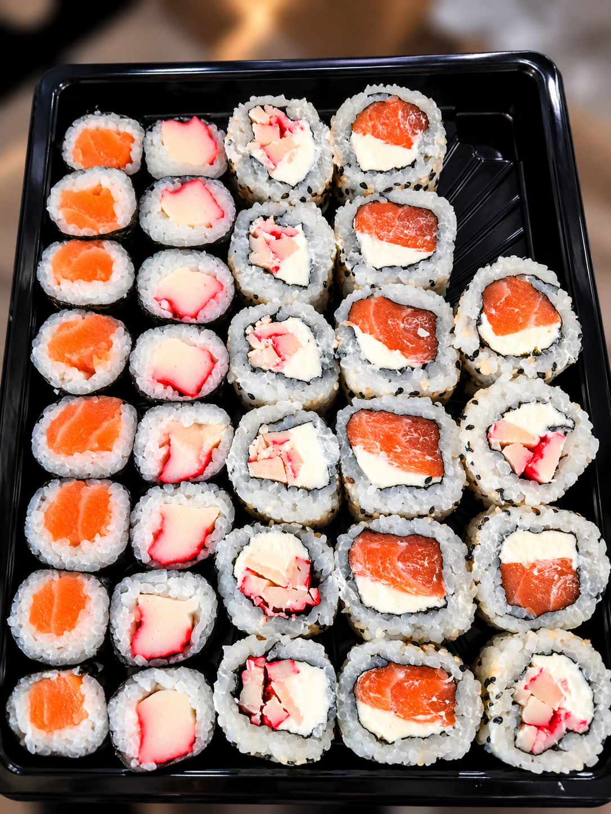
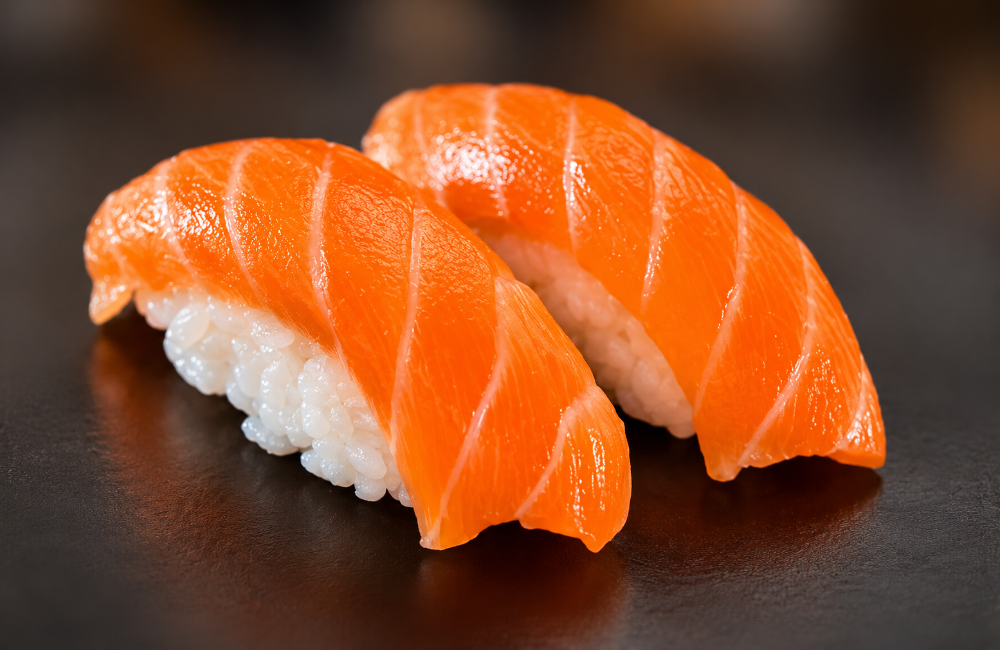
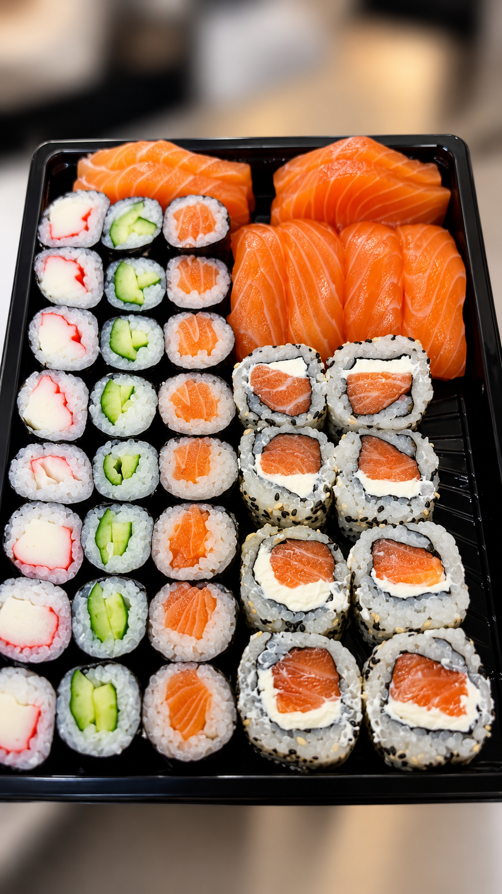
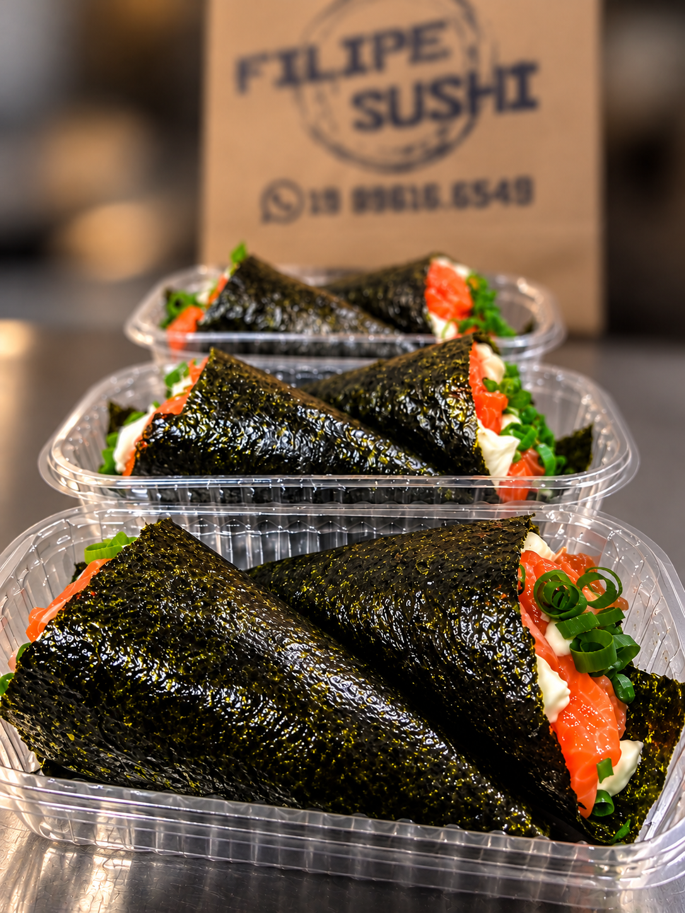
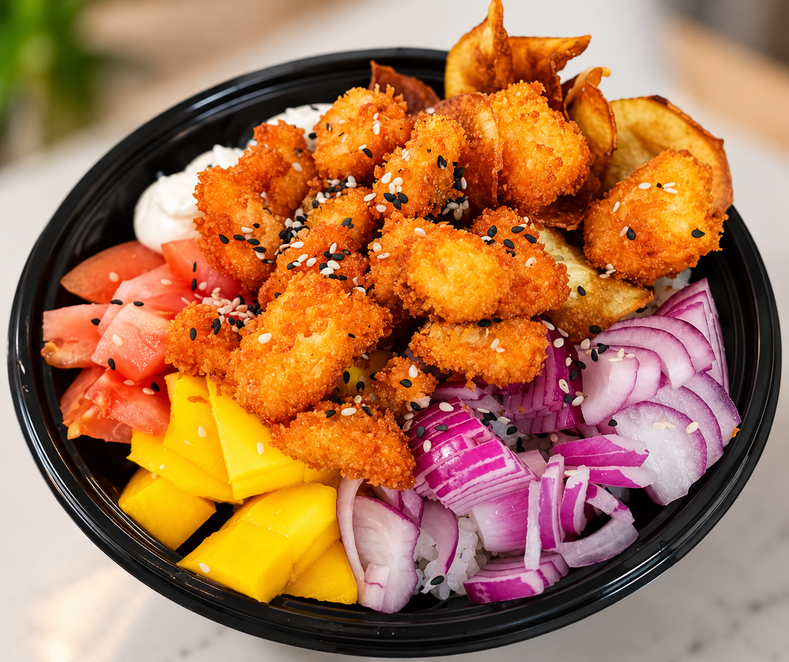
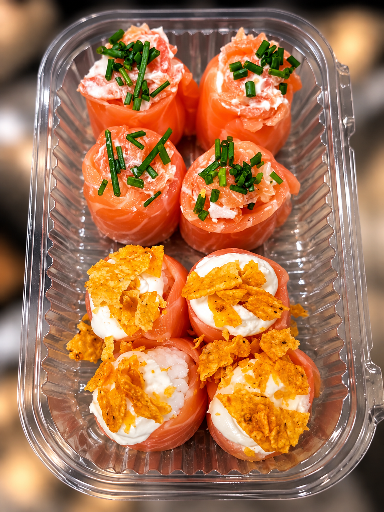
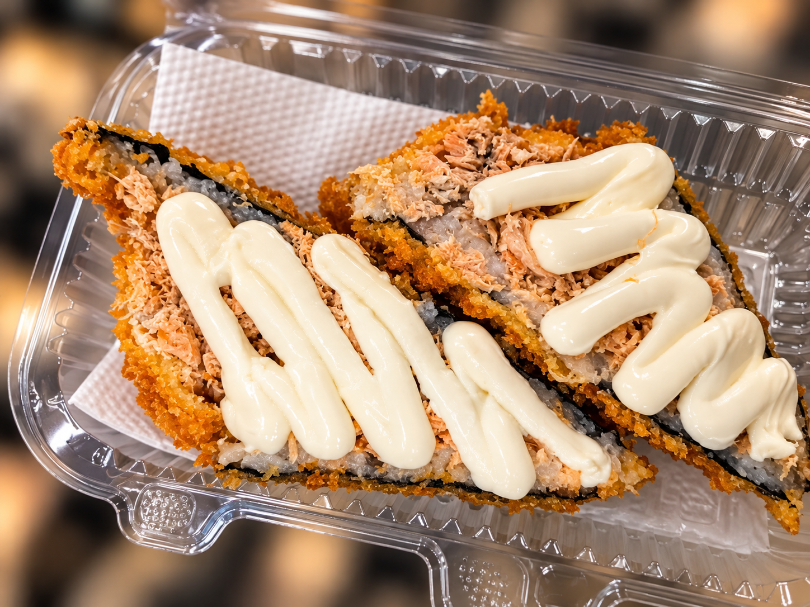
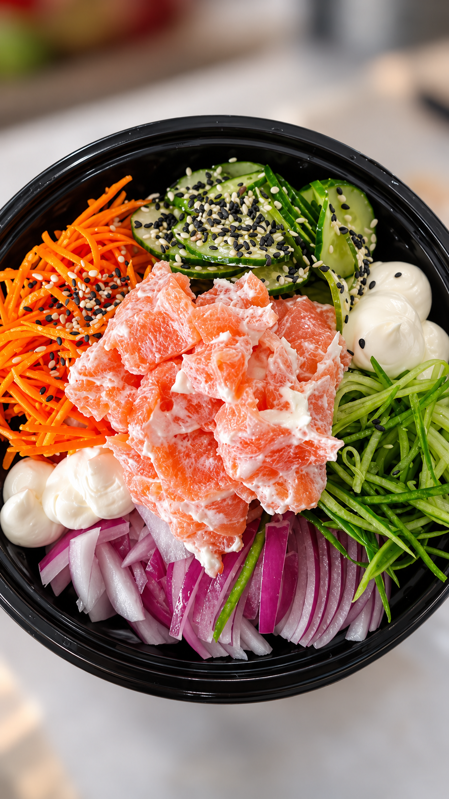

Nosso Instagram
Nosso Instagram
Nosso universo
Tradição
 Fale conosco pelo WhatsApp
Fale conosco pelo WhatsApp
Tradição
em cada
detalhe.
No Filipe Sushi, cada prato carrega mais do que sabor. Carrega história, cuidado e a paixão pela culinária japonesa.
Fale conosco pelo WhatsApp

Nossos sabores
Uma experiência
Uma experiência
completa.
Do clássico ao contemporâneo, exploramos diferentes combinações para criar momentos únicos à mesa.

Niguiris
Combinados
Temakis
Pokes Hot Rolls
Hot Rolls

Joys
Eventos
Sabor em
Sabor em
grandes
ocasiões.
Levamos a experiência do Filipe Sushi para eventos, confraternizações e momentos especiais. Qualidade, organização e muito sabor para tornar o seu evento ainda mais memorável.
Faça seu pedido!

